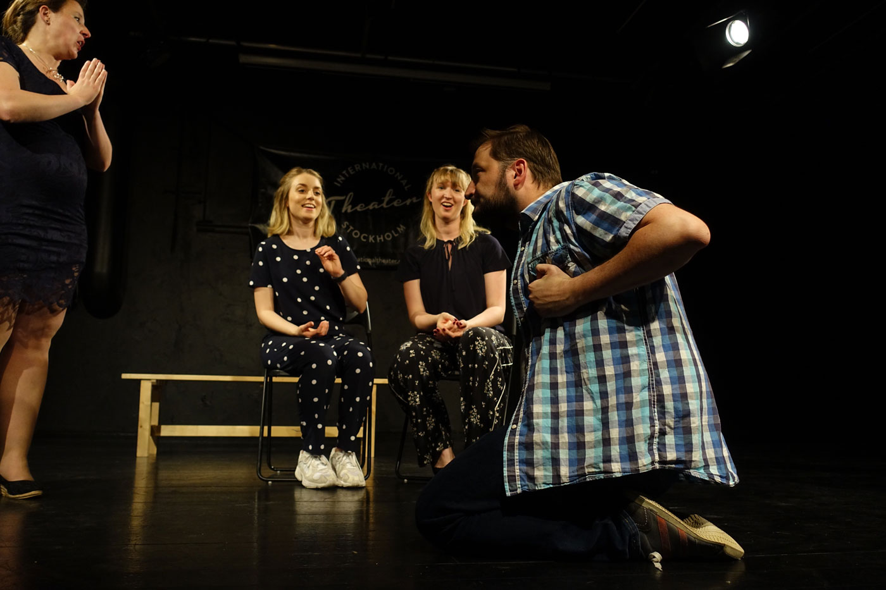
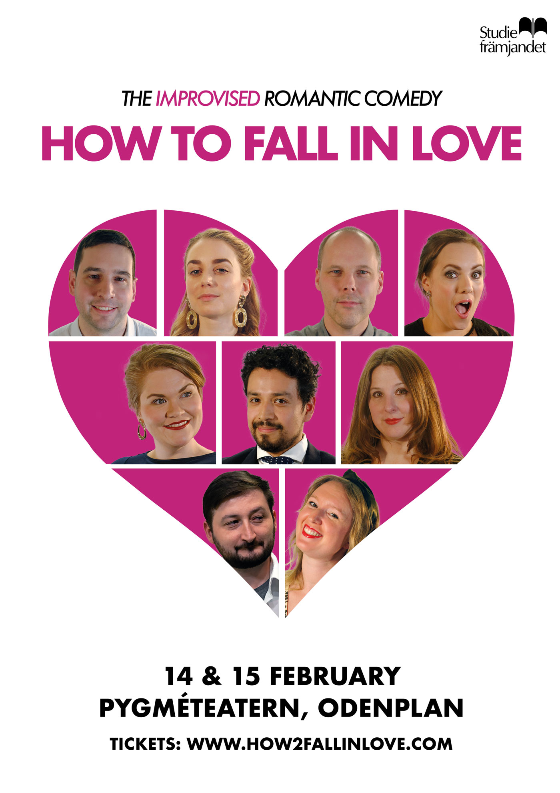

Growing up all I wanted was a pen and paper and I was entertained for hours. To study fine arts was a given.
Self portraits and painting from 2007.Then I started working as a strategist in advertising. I’ve improved the work conditions for nurse’s aids, got more young girls interested in tech, and increased awareness of skin cancer through play.
This has given me me experience in:
I’m proud of this campaign. It’s a protest against unequal pay, which led to increased salaries for the union Kommunal’s members. It was also awarded in Eurobest, Art Directors Club Europe and Cannes Lions.
I’ve created strategies for large and complex clients in Sweden and internationally, when working at Volontaire, Ingo and Nord DDB.
Seven years and three advertising agencies later it was time for a change. I realised I was in the wrong role - and in the wrong industry.
I’m a Design Lead student at Hyper Island in Stockholm since August 2019. During the same time I’m also studying for an online Professional Diploma in UX Design and a masterclass in Design Sprints.
This has given me the capabilities to work with:
In my free time I do improv comedy. It’s theatre without a script where everything is made up on the spot! I practice, perform and occasionally teach.
I’ve done more than 50 shows since 2016. If you are into the Stockholm improv scene, you might have seen me in Presens Houseteam, Wasabi, Drop, PMS, Brödfest or Half the Group.
 My next shows are in 14 February 2020, you can find the tickets here.